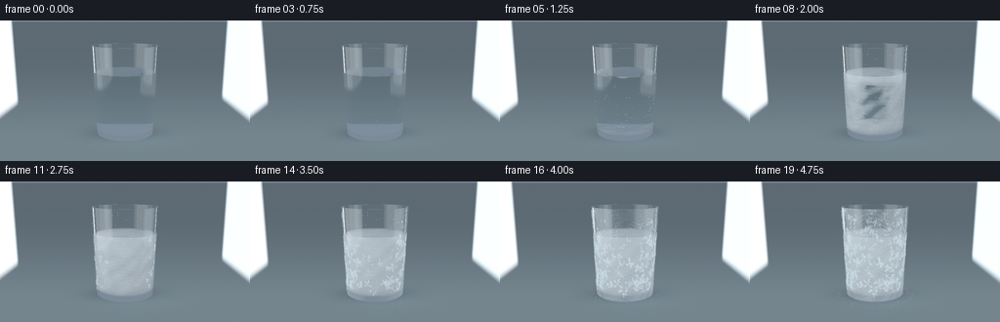
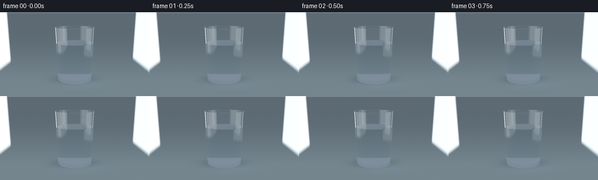

CODING AGENTS AS PIXEL WORLD MODELS
traex/GPT-6.1-Sol · phygen_091
点击播放 · 原生 RGB 像素
逐轮保存的候选
回放视频、检查图与代码变化。
每份候选均可单独播放。实际图片检查记录在下方工具轨迹中。
候选 01播放与检查图
点击播放 · 原生 RGB 像素


展开代码变化
--- 上一保存版本
+++ 本次保存版本
@@ -0,0 +1,326 @@
+"""A procedurally lit glass, with a three-dimensional inward freezing front.
+No input imagery, learned assets, or rendering libraries are used.
+"""
+from pathlib import Path
+import json
+import numpy as np
+from PIL import Image, ImageDraw, ImageFilter
+from artifact_io import save
+
+ROOT = Path(__file__).resolve().parent
+SPEC = json.loads((ROOT / 'task_spec.json').read_text())
+S = 3
+W, H = SPEC['width'] * S, SPEC['height'] * S
+rng = np.random.default_rng(91)
+
+def unit(v):
+ return v / np.maximum(np.linalg.norm(v, axis=-1, keepdims=True), 1e-9)
+
+def smooth(a, b, x):
+ q = np.clip((x-a)/(b-a), 0, 1)
+ return q*q*(3-2*q)
+
+# The tapered tumbler has actual inner and outer walls and a thick glass foot.
+CAM = np.array([0., 3.25, 8.6], dtype=np.float32)
+TARGET = np.array([0., 1.30, 0.], dtype=np.float32)
+forward = unit(TARGET-CAM)
+right = unit(np.cross(forward, [0., 1., 0.]))
+up = unit(np.cross(right, forward))
+yy, xx = np.mgrid[:H, :W].astype(np.float32)
+px = (xx+.5-W/2)/(H/2)*np.tan(np.deg2rad(13.0))
+py = -(yy+.5-H/2)/(H/2)*np.tan(np.deg2rad(13.0))
+D0 = unit(forward + px[...,None]*right + py[...,None]*up).astype(np.float32).reshape(-1,3)
+O0 = np.broadcast_to(CAM, D0.shape).copy()
+N = len(D0)
+WATER = 1.87
+
+
+def intersect(o, d):
+ best = np.full(len(o), 1e6, dtype=np.float32)
+ typ = np.full(len(o), -1, dtype=np.int8)
+ norm = np.zeros_like(o)
+ # Analytic intersections with the two conical cylinder walls.
+ for kind, intercept, lo, hi in [(0,.83,.08,2.60),(1,.775,.23,2.60)]:
+ k=.04
+ r0=intercept+k*o[:,1]
+ A=d[:,0]**2+d[:,2]**2-(k*d[:,1])**2
+ B=2*(o[:,0]*d[:,0]+o[:,2]*d[:,2]-r0*k*d[:,1])
+ C=o[:,0]**2+o[:,2]**2-r0*r0
+ disc=B*B-4*A*C
+ root=np.sqrt(np.maximum(disc,0))
+ for s in [-1,1]:
+ t=(-B+s*root)/(2*A+1e-15)
+ y=o[:,1]+t*d[:,1]
+ valid=(disc>=0)&(t>1e-4)&(t<best)&(y>=lo)&(y<=hi)
+ p=o+t[:,None]*d
+ radius=intercept+k*y
+ nn=unit(np.stack([p[:,0],-k*radius,p[:,2]],axis=1))
+ if kind==1: nn=-nn
+ norm[valid]=nn[valid]
+ best[valid]=t[valid]; typ[valid]=kind
+ for kind, level, rmin, rmax, sign in [
+ (2,.08,0,.8332,-1),(3,.23,0,.7842,1),
+ (4,2.60,.879,.934,1),(5,WATER,0,.775+.04*WATER,1)]:
+ t=(level-o[:,1])/(d[:,1]+1e-15)
+ p=o+t[:,None]*d
+ r2=p[:,0]**2+p[:,2]**2
+ valid=(t>1e-4)&(t<best)&(r2>=rmin*rmin)&(r2<=rmax*rmax)
+ norm[valid]=[0,sign,0]
+ best[valid]=t[valid];typ[valid]=kind
+ return best,typ,norm
+
+
+def environment(o,d):
+ # Seamless slate studio floor, broad asymmetric key and narrow cool rim.
+ t=-o[:,1]/(d[:,1]+1e-15)
+ floor=(t>0)&(d[:,1]<-.0001)
+ p=o+d*np.maximum(t,0)[:,None]
+ z=np.clip(p[:,2],-30,20)
+ dist=np.exp(-np.maximum(-z,0)/5)
+ col=np.stack([.115+.075*dist,.155+.105*dist,.19+.115*dist],axis=-1)
+ ambient=np.clip(d[:,1]*.5+.5,0,1)
+ sky=np.stack([.15+.13*ambient,.205+.14*ambient,.265+.17*ambient],axis=-1)
+ col=np.where(floor[:,None],col,sky)
+ # Ground contact shadow and a soft glass caustic.
+ sh=np.exp(-((p[:,0]/1.22)**2+(p[:,2]/.76)**2)*1.8)
+ col*=1-(floor*.65*sh)[:,None]
+ caust=np.exp(-((p[:,0]-.25)/1.0)**2-((p[:,2]-.42)/.58)**2)
+ col+=(floor*.07*caust)[:,None]*np.array([.5,.82,1.])
+ grain=(np.sin(p[:,0]*110+p[:,2]*51)+np.sin(p[:,0]*77-p[:,2]*133))*.0014
+ col+=np.where(floor,grain,0)[:,None]
+ # Finite rectangular photographic softboxes in world space.
+ for x, ymin,ymax,zmin,zmax,power,tint in [
+ (-3.5,.7,6.5,-1.0,4.3,1.65,[.91,.97,1.0]),
+ (3.0,1.0,5.0,-.5,1.8,1.9,[.75,.90,1.0])]:
+ tt=(x-o[:,0])/(d[:,0]+1e-15)
+ q=o+d*tt[:,None]
+ edge=smooth(ymin-.15,ymin+.15,q[:,1])*(1-smooth(ymax-.15,ymax+.15,q[:,1]))
+ edge*=smooth(zmin-.15,zmin+.15,q[:,2])*(1-smooth(zmax-.15,zmax+.15,q[:,2]))
+ edge*=tt>0
+ col+=edge[:,None]*power*np.array(tint)
+ # Broad luminous panel overhead, visible in the water's meniscus.
+ tt=(6.0-o[:,1])/(d[:,1]+1e-15)
+ q=o+d*tt[:,None]
+ panel=np.exp(-((q[:,0]+1.1)/2.8)**8-((q[:,2]-1.0)/2.4)**8)*(tt>0)
+ col+=panel[:,None]*np.array([.58,.67,.73])
+ return np.clip(col,0,3).astype(np.float32)
+
+# Trace all the transmissive paths once; the phase-change volume is evaluated
+# on these same stable rays for every frame, avoiding temporal render noise.
+o=O0.copy();d=D0.copy(); medium=np.ones(N,np.float32)
+paths=[]
+first_point=None;first_kind=None;first_normal=None
+for step in range(10):
+ t,kind,normal=intersect(o,d)
+ hit=kind>=0
+ if step==0:
+ first_point=o+d*np.minimum(t,50)[:,None]
+ first_kind=kind.copy();first_normal=normal.copy()
+ point=o+d*np.minimum(t,50)[:,None]
+ entering=np.sum(d*normal,axis=1)<0
+ face=np.where(entering[:,None],normal,-normal)
+ # 'outside' for inner shell means the liquid or the air in the cavity.
+ outside=np.ones(N,np.float32)
+ outside[(kind==1)|(kind==3)]=np.where(point[(kind==1)|(kind==3),1]<WATER+1e-4,1.333,1.)
+ inside=np.full(N,1.515,np.float32);inside[kind==5]=1.333
+ n1=np.where(entering,outside,inside)
+ n2=np.where(entering,inside,outside)
+ ratio=n1/n2
+ cosine=np.clip(-np.sum(d*face,axis=1),0,1)
+ discriminant=1-ratio*ratio*(1-cosine*cosine)
+ tir=discriminant<0
+ r0=((n1-n2)/(n1+n2))**2
+ fresnel=r0+(1-r0)*(1-cosine)**5
+ fresnel=np.where(tir,1.,fresnel)
+ reflected=d+2*cosine[:,None]*face
+ reflection=environment(point+face*.001,reflected)
+ background=environment(o,d)
+ paths.append(dict(start=o.copy(),dir=d.copy(),length=np.where(hit,t,0),
+ medium=medium.copy(),reflection=reflection,
+ fresnel=np.where(hit,fresnel,1).astype(np.float32),
+ terminal=~hit, background=background))
+ refracted=unit(ratio[:,None]*d+(ratio*cosine-np.sqrt(np.maximum(discriminant,0)))[:,None]*face)
+ d=np.where(tir[:,None],reflected,refracted).astype(np.float32)
+ o=point+d*.0004
+ medium=np.where(tir,medium,n2).astype(np.float32)
+ # Dead paths are pushed away from the glass for the remaining iterations.
+ o[~hit]=[30,30,30]
+
+# Continuous nonlearned 3D crystal texture.
+wave_dirs=rng.normal(size=(7,3)).astype(np.float32)
+wave_dirs=unit(wave_dirs)
+phases=rng.uniform(0,6.28,7).astype(np.float32)
+
+def texture(p):
+ n=np.zeros(len(p),np.float32)
+ fine=np.zeros_like(n)
+ for i in range(4):
+ v=p@wave_dirs[i]
+ n+=np.sin(v*(9+i*6)+phases[i])*.25
+ fine+=np.sin(v*(130+i*34)+phases[i])*.25
+ return n,fine
+
+# Cache four integration samples per water segment, with a deterministic
+# corrugated inward-front arrival time and prism-like microcrystal brightness.
+for path in paths:
+ water=np.abs(path['medium']-1.333)<.01
+ ids=np.flatnonzero(water & (path['length']>0))
+ path['water_ids']=ids
+ caches=[]
+ for frac in [.125,.375,.625,.875]:
+ p=path['start'][ids]+path['dir'][ids]*path['length'][ids,None]*frac
+ rad=np.sqrt(p[:,0]**2+p[:,2]**2)
+ n,fine=texture(p)
+ wall=(.775+.04*p[:,1]-rad)
+ top=(WATER-p[:,1])*.72
+ bottom=(p[:,1]-.23)*1.15
+ dist=np.minimum(wall,np.minimum(top,bottom))
+ dist=dist+.040*n+.012*fine
+ # Dense milky crystal veins amidst translucent pale-blue ice.
+ vein=np.exp(-((np.sin(p@wave_dirs[4]*29+2*n))/.22)**2)
+ granular=np.clip(.6+.30*n+.17*fine,0,1)
+ density=1.7+2.4*granular+1.5*vein
+ light=np.clip(.57+.16*(p[:,1]/WATER)+.12*(-p[:,0])+n*.08+fine*.045,.38,.96)
+ color=np.stack([light*.80,light*.94,light*1.055],axis=1)
+ caches.append((dist.astype(np.float32),density.astype(np.float32),color.astype(np.float32)))
+ path['samples']=caches
+
+# A fine fern-like rime pattern on the actual front cylindrical glass surface.
+# Projection keeps the frost wrapped around the tumbler rather than a flat decal.
+def project(p):
+ rel=np.asarray(p)-CAM
+ depth=rel@forward
+ fx=(rel@right)/(depth*np.tan(np.deg2rad(13)))
+ fy=(rel@up)/(depth*np.tan(np.deg2rad(13)))
+ return ((fx*H/2+W/2),(-fy*H/2+H/2))
+
+frost_layers=[Image.new('L',(W,H),0) for _ in range(SPEC['frames'])]
+fd=[ImageDraw.Draw(im) for im in frost_layers]
+
+def surface(theta,y,offset=.001):
+ radius=.83+.04*y+offset
+ return np.array([radius*np.sin(theta),y,radius*np.cos(theta)])
+
+# Thin branched needles nucleate along the cold lower and lateral walls.
+for seed in range(140):
+ theta=rng.uniform(-1.43,1.43)
+ basey=rng.uniform(.21,2.57)
+ side=abs(np.sin(theta))
+ onset=.40+.25*(1-side)+.15*basey/2.6+rng.uniform(-.09,.11)
+ if basey>WATER: onset+=.11
+ angle=rng.uniform(0,2*np.pi)
+ length=rng.uniform(.055,.19)*(1+.5*side)
+ branches=[]
+ for ray in range(rng.integers(2,5)):
+ a=angle+ray*rng.uniform(.75,1.7)
+ end=np.array([theta+np.cos(a)*length,basey+np.sin(a)*length])
+ start=np.array([theta,basey])
+ branches.append((start,end,0.,1.))
+ for pos in [.35,.58,.8]:
+ for sign in [-1,1]:
+ root=start+(end-start)*pos
+ tip=root+np.array([np.cos(a+sign*.72),np.sin(a+sign*.72)])*length*(1-pos)*.58
+ branches.append((root,tip,pos,1.))
+ for frame in range(SPEC['frames']):
+ time=frame/(SPEC['frames']-1)
+ growth=np.clip((time-onset)/.22,0,1)
+ if growth<=0: continue
+ opacity=int(135*min(1,growth*2))
+ for a,b,lag,_ in branches:
+ g=np.clip((growth-lag)/(1-lag),0,1)
+ if g<=0: continue
+ b=a+(b-a)*g
+ if min(a[1],b[1])<.12 or max(a[1],b[1])>2.59:continue
+ pts=[project(surface(*a)),project(surface(*b))]
+ fd[frame].line(pts,fill=opacity,width=1 if seed%3 else 2)
+
+# Pinhead condensation remains stationary and becomes opaque rime, not bubbles
+# floating inexplicably through the already-solid ice.
+drops=[]
+for _ in range(230):
+ theta=rng.uniform(-1.4,1.4);y=rng.uniform(.28,2.53)
+ x,yp=project(surface(theta,y,.003))
+ size=rng.uniform(.16,.5)*S
+ onset=rng.uniform(.10,.37)
+ drops.append((x,yp,size,onset,theta,y))
+
+# Front face coordinates also provide the fine frost haze.
+mask=(first_kind==0)
+fy=first_point[:,1]
+rad=np.sqrt(first_point[:,0]**2+first_point[:,2]**2)
+side=np.clip(np.abs(first_point[:,0])/(rad+1e-6),0,1)
+front_n,front_f=texture(first_point)
+
+frames=[]
+for frame in range(SPEC['frames']):
+ time=frame/(SPEC['frames']-1)
+ freeze=smooth(.16,.91,time)
+ depth=-.028+.76*freeze
+ # Slightly colder illumination, with fixed exposure and fixed camera.
+ col=np.zeros((N,3),np.float32)
+ transmission=np.ones((N,3),np.float32)
+ for path in paths:
+ length=path['length']
+ glass=np.abs(path['medium']-1.515)<.01
+ transmission*=np.exp(-length[:,None]*glass[:,None]*np.array([.075,.018,.009]))
+ ids=path['water_ids']
+ if len(ids):
+ delta=length[ids]/4
+ for arrival,density,ice_color in path['samples']:
+ solid=smooth(-.025,.025,depth-arrival)*freeze**.18
+ opacity=1-np.exp(-delta*density*solid)
+ col[ids]+=transmission[ids]*opacity[:,None]*ice_color
+ transmission[ids]*=(1-opacity[:,None])
+ transmission[ids]*=np.exp(-delta[:,None]*np.array([.048,.017,.007]))
+ terminal=path['terminal']
+ col[terminal]+=transmission[terminal]*path['background'][terminal]
+ transmission[terminal]=0
+ refl=path['fresnel']
+ col+=transmission*refl[:,None]*path['reflection']
+ transmission*=(1-refl[:,None])
+ col+=transmission*np.array([.17,.24,.3])
+ # Thin, patchy exterior frost builds after the bulk begins crystallizing.
+ onset=.53+.19*(1-side)+.08*fy/2.6+.045*front_n
+ haze=smooth(onset,onset+.23,time)*mask
+ haze*=np.clip(.28+.14*front_n+.18*front_f,0,.55)
+ haze=np.where((fy>.10)&(fy<2.60),haze,0)
+ frost_color=np.array([.65,.78,.86])
+ col=col*(1-haze[:,None])+frost_color*haze[:,None]
+ # Restrained photographic highlight rolloff then display encoding.
+ col=np.maximum(col,0)
+ col=col/(1+col*.38)
+ srgb=np.where(col<.0031308,col*12.92,1.055*col**(1/2.4)-.055)
+ out=np.clip(srgb.reshape(H,W,3)*255,0,255).astype(np.uint8)
+ image=Image.fromarray(out,'RGB').convert('RGBA')
+ # Condensed droplets show a dark edge, small specular glint and eventually frost.
+ layer=Image.new('RGBA',(W,H),(0,0,0,0));draw=ImageDraw.Draw(layer)
+ for x,y,r,on,theta,wy in drops:
+ appear=smooth(on,on+.10,time)
+ if appear==0:continue
+ icy=smooth(.52,.86,time)
+ alpha=int(appear*(48+icy*55))
+ draw.ellipse((x-r,y-r,x+r,y+r*1.15),fill=(156,197,214,alpha),outline=(89,128,143,int(appear*65)))
+ draw.ellipse((x-r*.55,y-r*.65,x,y),fill=(235,247,253,int(appear*115)))
+ image=Image.alpha_composite(image,layer)
+ # Fern crystals are small and delicate; opaque white snowflakes are avoided.
+ frost=Image.new('RGBA',(W,H),(214,237,249,0));frost.putalpha(frost_layers[frame])
+ image=Image.alpha_composite(image,frost)
+ # Local frost on the shelf immediately around the cold foot.
+ if time>.63:
+ foot=Image.new('RGBA',(W,H),(0,0,0,0));draw=ImageDraw.Draw(foot)
+ frng=np.random.default_rng(200)
+ for j in range(280):
+ ang=frng.uniform(0,2*np.pi);r=frng.uniform(.84,1.14)
+ point=np.array([r*np.sin(ang),.001,r*np.cos(ang)])
+ x,y=project(point)
+ onset=frng.uniform(.63,.96)
+ a=int(75*smooth(onset,min(onset+.1,1.),time))
+ if a:draw.line((x,y,x+frng.uniform(-2,2),y+frng.uniform(-.8,.8)),fill=(186,218,231,a),width=1)
+ # Shelf crystals are behind the tumbler.
+ a=np.asarray(foot).copy();a[first_kind.reshape(H,W)>=0,3]=0
+ image=Image.alpha_composite(image,Image.fromarray(a))
+ image=image.convert('RGB').resize((SPEC['width'],SPEC['height']),Image.Resampling.LANCZOS)
+ frames.append(np.asarray(image))
+ print(f'rendered frame {frame+1}/{SPEC["frames"]}',flush=True)
+save(np.stack(frames).astype(np.uint8), ROOT)
+print('Saved RGB video artifacts to',ROOT)
可观测工具轨迹
实际执行的命令与返回图片。
命令 1exit 0
/bin/bash -lc 'ls -la && cat prompt.txt && cat GENERATION_RULES.md && cat task_spec.json'
命令 2exit 0
/bin/bash -lc "cat artifact_io.py && cat player_template.html && python - <<'PY'
import numpy, PIL
print('numpy', numpy.__version__, 'PIL', PIL.__version__)
PY"命令 3exit 0
/bin/bash -lc "which ffmpeg || true; find . -maxdepth 1 -type f -printf '%f\\n'"
命令 4exit 0
/bin/bash -lc "python - <<'PY'
try:
import scipy; print('scipy',scipy.__version__)
except Exception as e: print(e)
PY"命令 5exit 0
/bin/bash -lc 'fc-list | head -8'
命令 6exit 0
/bin/bash -lc "cat > generate.py <<'PY'
\"\"\"A procedurally lit glass, with a three-dimensional inward freezing front.
No input imagery, learned assets, or rendering libraries are used.
\"\"\"
from pathlib import Path
import json
import numpy as np
from PIL import Image, ImageDraw, ImageFilter
from artifact_io import save
ROOT = Path(__file__).resolve().parent
SPEC = json.loads((ROOT / 'task_spec.json').read_text())
S = 3
W, H = SPEC['width'] * S, SPEC['height'] * S
rng = np.random.default_rng(91)
def unit(v):
return v / np.maximum(np.linalg.norm(v, axis=-1, keepdims=True), 1e-9)
def smooth(a, b, x):
q = np.clip((x-a)/(b-a), 0, 1)
return q*q*(3-2*q)
# The tapered tumbler has actual inner and outer walls and a thick glass foot.
CAM = np.array([0., 3.25, 8.6], dtype=np.float32)
TARGET = np.array([0., 1.30, 0.], dtype=np.float32)
forward = unit(TARGET-CAM)
right = unit(np.cross(forward, [0., 1., 0.]))
up = unit(np.cross(right, forward))
yy, xx = np.mgrid[:H, :W].astype(np.float32)
px = (xx+.5-W/2)/(H/2)*np.tan(np.deg2rad(13.0))
py = -(yy+.5-H/2)/(H/2)*np.tan(np.deg2rad(13.0))
D0 = unit(forward + px[...,None]*right + py[...,None]*up).astype(np.float32).reshape(-1,3)
O0 = np.broadcast_to(CAM, D0.shape).copy()
N = len(D0)
WATER = 1.87
def intersect(o, d):
best = np.full(len(o), 1e6, dtype=np.float32)
typ = np.full(len(o), -1, dtype=np.int8)
norm = np.zeros_like(o)
# Analytic intersections with the two conical cylinder walls.
for kind, intercept, lo, hi in [(0,.83,.08,2.60),(1,.775,.23,2.60)]:
k=.04
r0=intercept+k*o[:,1]
A=d[:,0]**2+d[:,2]**2-(k*d[:,1])**2
B=2*(o[:,0]*d[:,0]+o[:,2]*d[:,2]-r0*k*d[:,1])
C=o[:,0]**2+o[:,2]**2-r0*r0
disc=B*B-4*A*C
root=np.sqrt(np.maximum(disc,0))
for s in [-1,1]:
t=(-B+s*root)/(2*A+1e-15)
y=o[:,1]+t*d[:,1]
valid=(disc>=0)&(t>1e-4)&(t<best)&(y>=lo)&(y<=hi)
p=o+t[:,None]*d
radius=intercept+k*y
nn=unit(np.stack([p[:,0],-k*radius,p[:,2]],axis=1))
if kind==1: nn=-nn
norm[valid]=nn[valid]
best[valid]=t[valid]; typ[valid]=kind
for kind, level, rmin, rmax, sign in [
(2,.08,0,.8332,-1),(3,.23,0,.7842,1),
(4,2.60,.879,.934,1),(5,WATER,0,.775+.04*WATER,1)]:
t=(level-o[:,1])/(d[:,1]+1e-15)
p=o+t[:,None]*d
r2=p[:,0]**2+p[:,2]**2
valid=(t>1e-4)&(t<best)&(r2>=rmin*rmin)&(r2<=rmax*rmax)
norm[valid]=[0,sign,0]
best[valid]=t[valid];typ[valid]=kind
return best,typ,norm
def environment(o,d):
# Seamless slate studio floor, broad asymmetric key and narrow cool rim.
t=-o[:,1]/(d[:,1]+1e-15)
floor=(t>0)&(d[:,1]<-.0001)
p=o+d*np.maximum(t,0)[:,None]
z=np.clip(p[:,2],-30,20)
dist=np.exp(-np.maximum(-z,0)/5)
col=np.stack([.115+.075*dist,.155+.105*dist,.19+.115*dist],axis=-1)
ambient=np.clip(d[:,1]*.5+.5,0,1)
sky=np.stack([.15+.13*ambient,.205+.14*ambient,.265+.17*ambient],axis=-1)
col=np.where(floor[:,None],col,sky)
# Ground contact shadow and a soft glass caustic.
sh=np.exp(-((p[:,0]/1.22)**2+(p[:,2]/.76)**2)*1.8)
col*=1-(floor*.65*sh)[:,None]
caust=np.exp(-((p[:,0]-.25)/1.0)**2-((p[:,2]-.42)/.58)**2)
col+=(floor*.07*caust)[:,None]*np.array([.5,.82,1.])
grain=(np.sin(p[:,0]*110+p[:,2]*51)+np.sin(p[:,0]*77-p[:,2]*133))*.0014
col+=np.where(floor,grain,0)[:,None]
# Finite rectangular photographic softboxes in world space.
for x, ymin,ymax,zmin,zmax,power,tint in [
(-3.5,.7,6.5,-1.0,4.3,1.65,[.91,.97,1.0]),
(3.0,1.0,5.0,-.5,1.8,1.9,[.75,.90,1.0])]:
tt=(x-o[:,0])/(d[:,0]+1e-15)
q=o+d*tt[:,None]
edge=smooth(ymin-.15,ymin+.15,q[:,1])*(1-smooth(ymax-.15,ymax+.15,q[:,1]))
edge*=smooth(zmin-.15,zmin+.15,q[:,2])*(1-smooth(zmax-.15,zmax+.15,q[:,2]))
edge*=tt>0
col+=edge[:,None]*power*np.array(tint)
# Broad luminous panel overhead, visible in the water's meniscus.
tt=(6.0-o[:,1])/(d[:,1]+1e-15)
q=o+d*tt[:,None]
panel=np.exp(-((q[:,0]+1.1)/2.8)**8-((q[:,2]-1.0)/2.4)**8)*(tt>0)
col+=panel[:,None]*np.array([.58,.67,.73])
return np.clip(col,0,3).astype(np.float32)
# Trace all the transmissive paths once; the phase-change volume is evaluated
# on these same stable rays for every frame, avoiding temporal render noise.
o=O0.copy();d=D0.copy(); medium=np.ones(N,np.float32)
paths=[]
first_point=None;first_kind=None;first_normal=None
for step in range(10):
t,kind,normal=intersect(o,d)
hit=kind>=0
if step==0:
first_point=o+d*np.minimum(t,50)[:,None]
first_kind=kind.copy();first_normal=normal.copy()
point=o+d*np.minimum(t,50)[:,None]
entering=np.sum(d*normal,axis=1)<0
face=np.where(entering[:,None],normal,-normal)
# 'outside' for inner shell means the liquid or the air in the cavity.
outside=np.ones(N,np.float32)
outside[(kind==1)|(kind==3)]=np.where(point[(kind==1)|(kind==3),1]<WATER+1e-4,1.333,1.)
inside=np.full(N,1.515,np.float32);inside[kind==5]=1.333
n1=np.where(entering,outside,inside)
n2=np.where(entering,inside,outside)
ratio=n1/n2
cosine=np.clip(-np.sum(d*face,axis=1),0,1)
discriminant=1-ratio*ratio*(1-cosine*cosine)
tir=discriminant<0
r0=((n1-n2)/(n1+n2))**2
fresnel=r0+(1-r0)*(1-cosine)**5
fresnel=np.where(tir,1.,fresnel)
reflected=d+2*cosine[:,None]*face
reflection=environment(point+face*.001,reflected)
background=environment(o,d)
paths.append(dict(start=o.copy(),dir=d.copy(),length=np.where(hit,t,0),
medium=medium.copy(),reflection=reflection,
fresnel=np.where(hit,fresnel,1).astype(np.float32),
terminal=~hit, background=background))
refracted=unit(ratio[:,None]*d+(ratio*cosine-np.sqrt(np.maximum(discriminant,0)))[:,None]*face)
d=np.where(tir[:,None],reflected,refracted).astype(np.float32)
o=point+d*.0004
medium=np.where(tir,medium,n2).astype(np.float32)
# Dead paths are pushed away from the glass for the remaining iterations.
o[~hit]=[30,30,30]
# Continuous nonlearned 3D crystal texture.
wave_dirs=rng.normal(size=(7,3)).astype(np.float32)
wave_dirs=unit(wave_dirs)
phases=rng.uniform(0,6.28,7).astype(np.float32)
def texture(p):
n=np.zeros(len(p),np.float32)
fine=np.zeros_like(n)
for i in range(4):
v=p@wave_dirs[i]
n+=np.sin(v*(9+i*6)+phases[i])*.25
fine+=np.sin(v*(130+i*34)+phases[i])*.25
return n,fine
# Cache four integration samples per water segment, with a deterministic
# corrugated inward-front arrival time and prism-like microcrystal brightness.
for path in paths:
water=np.abs(path['medium']-1.333)<.01
ids=np.flatnonzero(water & (path['length']>0))
path['water_ids']=ids
caches=[]
for frac in [.125,.375,.625,.875]:
p=path['start'][ids]+path['dir'][ids]*path['length'][ids,None]*frac
rad=np.sqrt(p[:,0]**2+p[:,2]**2)
n,fine=texture(p)
wall=(.775+.04*p[:,1]-rad)
top=(WATER-p[:,1])*.72
bottom=(p[:,1]-.23)*1.15
dist=np.minimum(wall,np.minimum(top,bottom))
dist=dist+.040*n+.012*fine
# Dense milky crystal veins amidst translucent pale-blue ice.
vein=np.exp(-((np.sin(p@wave_dirs[4]*29+2*n))/.22)**2)
granular=np.clip(.6+.30*n+.17*fine,0,1)
density=1.7+2.4*granular+1.5*vein
light=np.clip(.57+.16*(p[:,1]/WATER)+.12*(-p[:,0])+n*.08+fine*.045,.38,.96)
color=np.stack([light*.80,light*.94,light*1.055],axis=1)
caches.append((dist.astype(np.float32),density.astype(np.float32),color.astype(np.float32)))
path['samples']=caches
# A fine fern-like rime pattern on the actual front cylindrical glass surface.
# Projection keeps the frost wrapped around the tumbler rather than a flat decal.
def project(p):
rel=np.asarray(p)-CAM
depth=rel@forward
fx=(rel@right)/(depth*np.tan(np.deg2rad(13)))
fy=(rel@up)/(depth*np.tan(np.deg2rad(13)))
return ((fx*H/2+W/2),(-fy*H/2+H/2))
frost_layers=[Image.new('L',(W,H),0) for _ in range(SPEC['frames'])]
fd=[ImageDraw.Draw(im) for im in frost_layers]
def surface(theta,y,offset=.001):
radius=.83+.04*y+offset
return np.array([radius*np.sin(theta),y,radius*np.cos(theta)])
# Thin branched needles nucleate along the cold lower and lateral walls.
for seed in range(140):
theta=rng.uniform(-1.43,1.43)
basey=rng.uniform(.21,2.57)
side=abs(np.sin(theta))
onset=.40+.25*(1-side)+.15*basey/2.6+rng.uniform(-.09,.11)
if basey>WATER: onset+=.11
angle=rng.uniform(0,2*np.pi)
length=rng.uniform(.055,.19)*(1+.5*side)
branches=[]
for ray in range(rng.integers(2,5)):
a=angle+ray*rng.uniform(.75,1.7)
end=np.array([theta+np.cos(a)*length,basey+np.sin(a)*length])
start=np.array([theta,basey])
branches.append((start,end,0.,1.))
for pos in [.35,.58,.8]:
for sign in [-1,1]:
root=start+(end-start)*pos
tip=root+np.array([np.cos(a+sign*.72),np.sin(a+sign*.72)])*length*(1-pos)*.58
branches.append((root,tip,pos,1.))
for frame in range(SPEC['frames']):
time=frame/(SPEC['frames']-1)
growth=np.clip((time-onset)/.22,0,1)
if growth<=0: continue
opacity=int(135*min(1,growth*2))
for a,b,lag,_ in branches:
g=np.clip((growth-lag)/(1-lag),0,1)
if g<=0: continue
b=a+(b-a)*g
if min(a[1],b[1])<.12 or max(a[1],b[1])>2.59:continue
pts=[project(surface(*a)),project(surface(*b))]
fd[frame].line(pts,fill=opacity,width=1 if seed%3 else 2)
# Pinhead condensation remains stationary and becomes opaque rime, not bubbles
# floating inexplicably through the already-solid ice.
drops=[]
for _ in range(230):
theta=rng.uniform(-1.4,1.4);y=rng.uniform(.28,2.53)
x,yp=project(surface(theta,y,.003))
size=rng.uniform(.16,.5)*S
onset=rng.uniform(.10,.37)
drops.append((x,yp,size,onset,theta,y))
# Front face coordinates also provide the fine frost haze.
mask=(first_kind==0)
fy=first_point[:,1]
rad=np.sqrt(first_point[:,0]**2+first_point[:,2]**2)
side=np.clip(np.abs(first_point[:,0])/(rad+1e-6),0,1)
front_n,front_f=texture(first_point)
frames=[]
for frame in range(SPEC['frames']):
time=frame/(SPEC['frames']-1)
freeze=smooth(.16,.91,time)
depth=-.028+.76*freeze
# Slightly colder illumination, with fixed exposure and fixed camera.
col=np.zeros((N,3),np.float32)
transmission=np.ones((N,3),np.float32)
for path in paths:
length=path['length']
glass=np.abs(path['medium']-1.515)<.01
transmission*=np.exp(-length[:,None]*glass[:,None]*np.array([.075,.018,.009]))
ids=path['water_ids']
if len(ids):
delta=length[ids]/4
for arrival,density,ice_color in path['samples']:
solid=smooth(-.025,.025,depth-arrival)*freeze**.18
opacity=1-np.exp(-delta*density*solid)
col[ids]+=transmission[ids]*opacity[:,None]*ice_color
transmission[ids]*=(1-opacity[:,None])
transmission[ids]*=np.exp(-delta[:,None]*np.array([.048,.017,.007]))
terminal=path['terminal']
col[terminal]+=transmission[terminal]*path['background'][terminal]
transmission[terminal]=0
refl=path['fresnel']
col+=transmission*refl[:,None]*path['reflection']
transmission*=(1-refl[:,None])
col+=transmission*np.array([.17,.24,.3])
# Thin, patchy exterior frost builds after the bulk begins crystallizing.
onset=.53+.19*(1-side)+.08*fy/2.6+.045*front_n
haze=smooth(onset,onset+.23,time)*mask
haze*=np.clip(.28+.14*front_n+.18*front_f,0,.55)
haze=np.where((fy>.10)&(fy<2.60),haze,0)
frost_color=np.array([.65,.78,.86])
col=col*(1-haze[:,None])+frost_color*haze[:,None]
# Restrained photographic highlight rolloff then display encoding.
col=np.maximum(col,0)
col=col/(1+col*.38)
srgb=np.where(col<.0031308,col*12.92,1.055*col**(1/2.4)-.055)
out=np.clip(srgb.reshape(H,W,3)*255,0,255).astype(np.uint8)
image=Image.fromarray(out,'RGB').convert('RGBA')
# Condensed droplets show a dark edge, small specular glint and eventually frost.
layer=Image.new('RGBA',(W,H),(0,0,0,0));draw=ImageDraw.Draw(layer)
for x,y,r,on,theta,wy in drops:
appear=smooth(on,on+.10,time)
if appear==0:continue
icy=smooth(.52,.86,time)
alpha=int(appear*(48+icy*55))
draw.ellipse((x-r,y-r,x+r,y+r*1.15),fill=(156,197,214,alpha),outline=(89,128,143,int(appear*65)))
draw.ellipse((x-r*.55,y-r*.65,x,y),fill=(235,247,253,int(appear*115)))
image=Image.alpha_composite(image,layer)
# Fern crystals are small and delicate; opaque white snowflakes are avoided.
frost=Image.new('RGBA',(W,H),(214,237,249,0));frost.putalpha(frost_layers[frame])
image=Image.alpha_composite(image,frost)
# Local frost on the shelf immediately around the cold foot.
if time>.63:
foot=Image.new('RGBA',(W,H),(0,0,0,0));draw=ImageDraw.Draw(foot)
frng=np.random.default_rng(200)
for j in range(280):
ang=frng.uniform(0,2*np.pi);r=frng.uniform(.84,1.14)
point=np.array([r*np.sin(ang),.001,r*np.cos(ang)])
x,y=project(point)
onset=frng.uniform(.63,.96)
a=int(75*smooth(onset,min(onset+.1,1.),time))
if a:draw.line((x,y,x+frng.uniform(-2,2),y+frng.uniform(-.8,.8)),fill=(186,218,231,a),width=1)
# Shelf crystals are behind the tumbler.
a=np.asarray(foot).copy();a[first_kind.reshape(H,W)>=0,3]=0
image=Image.alpha_composite(image,Image.fromarray(a))
image=image.convert('RGB').resize((SPEC['width'],SPEC['height']),Image.Resampling.LANCZOS)
frames.append(np.asarray(image))
print(f'rendered frame {frame+1}/{SPEC[\"frames\"]}',flush=True)
save(np.stack(frames).astype(np.uint8), ROOT)
print('Saved RGB video artifacts to',ROOT)
PY
OPENBLAS_NUM_THREADS=1 python generate.py"命令 7exit 0
/bin/bash -lc "python - <<'PY'
from pathlib import Path
import numpy as np
from PIL import Image
p=Path('.')
a=np.load(p/'pixels.npz')['pixels']
assert a.shape==(144,256,20)
files=sorted((p/'frames').glob('*.png'))
assert len(files)==20
f=np.stack([np.asarray(Image.open(x)) for x in files])
assert f.shape==(20,144,256,3) and f.dtype==np.uint8
assert all(Image.open(x).mode=='RGB' for x in files)
assert np.max(np.abs(f[-1].astype(float)-f[0].astype(float)))>50
print('Validated: 20 RGB frames, 256Ã144, 4 fps (5 seconds).')
print('Frame changes (mean RGB absolute difference):',np.round(np.abs(np.diff(f.astype(float),axis=0)).mean((1,2,3)),2).tolist())
for name in ['generate.py','pixels.npz','index.html','inspection.png','transition_check.png']:
print(name,(p/name).stat().st_size,'bytes')
PY"保存候选 1 份；完成命令 7 次；可验证图片返回 0 张。原始 API 响应与完整日志保留在本地。